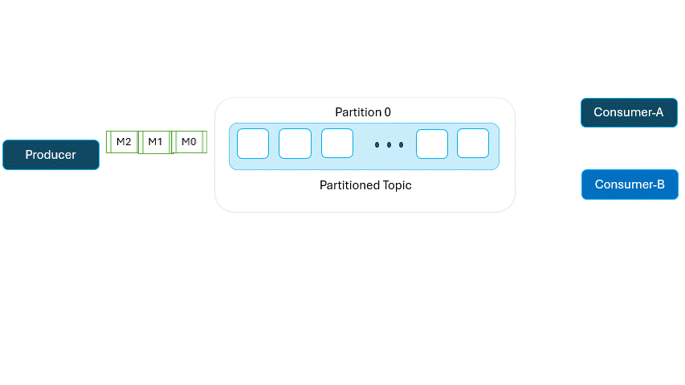

Kafka Offsets
Kafka offsets are critical to understanding and managing messages consumption in Apache Kafka. An Offset is a unique identifier for each message in a kafka partition, and it tells a consumer where to continue reading if it stops and restarts.
Let's dive into Kafka offsets with real-time examples to clarify their purpose and importance.
1. Kafka Offsets Explained
In Kafka, each topic is split into Partitions. Each partition is an ordered sequence of messages, and each message in a partition has a unique identifier called an offset.
-
Offset: An integer value assigned to messages in a partition, identifying their position. The first message in a partition might have an offset of 0, the next one 1, and so on.
-
Consumer Offset: This is the offset that a consumer reads from in a partition. Kafka allows consumers to commit offsets, so they can resume reading from where they left off, even after a restart.
2. Why Kafka Offsets Are Important
Offsets are essential for tracking and replaying messages. Here's why:
-
Restarting Consumers: If a consumer crashes, it can resume from the last committed offset, avoiding message duplication or message loss.
-
Replaying Messages: You can rewind to a specific offset to replay messages for specific offset to replay messages for analytics or troubleshooting purposes.
-
Tracking Progress: Offsets help track which messages have been processed, allowing for fault tolarence.
3. Real-Time Examples of Kafka Offset Management
Example 1: Basic Offset Tracking in a Consumer Group
Imagine you have a kafka topic with a single partition, and a consumer group with two consumers, Consumer-A and Consumer-B, is reading messages. Here's how offsets work in this scenario:
-
Message Arrival: Messages m0, m1, and m2 are produced to the partition with offsets 0, 1, and 2, respectively.
-
Consumer Read: Consumer-A reads m0 and commits the offset 0. Then it reads m1 and commits offset 1.
-
Failure and Recovery: If Consumer-A crashes after reading m1, it can resume at offset 2 (last commit offset) upon restart. This avoids reprocessing m1 or missing m2.
This setup helps ensure no message duplication or loss. 
Example 2: Tracking and Committing Offsets Manually
Considering a situation where you're processing critical messages, and you want precise control over when offsets are committed. In thic case, you might manually commit offsets after each message processing, rather than automatically.
-
Start Reading: Consumer-B reads a message with offset 0 but doesn't immediately commit it.
-
Processing: It takes some time to process this message. If the consumer crashes before commiting the offset, it will resume at 0, re-reading the message upon restart.
-
Commit After Processing: After processing, Consumer-B commits offset 0, ensuring progress is saved only after successful processing.
Manualy commits give more control and can be essential in use cases where processing integrity is critical.
4. Real-Time Example: Replay and Rewind Using Offsets
kafka's offset system allows you to replay of rewind messages. Suppose you have a kafka topic with customer purchase events, and you want to analyze event from a sepcific time.
-
Set Offset Manually: You can configure a consumer to start at specific offset (e.g offset 100) instead of latest message. This allows the consumer to replay messages starting from that point.
-
Rewind: If an error occurs in the data processing logic, you can rewind to an earlier offset and reprocess the messages, correcting any issues with out reading to republish events.
This replay and rewind capability make Kafka a great choice for event-driven applications, where historical data needs to be processed.
5. Implementing Offset Tracking with a Real-Time Python Example
Here's python script that demonstrates real-time Kafka offset tracking using the kafka-python library. This script consumes messages from a kafka topic and logs the offset of each message, allowing you to track progress and replay messages if needed.
Python Code for Real-Time Offset Tracking
from kafka import kafkaConsumer
import logging
# Set up logging
logging.basicConfig(level=logging.INFO, format="%(asctime)s - %(message)s")
def consume_messages(broker, topic):
consumer = kafkaConsumer(
topic,
bootstrap_servers=[broker],
group_id="example_group",
auto_offset_reset="earliest", # Start from the beginning if no commited offset
enable_auto_commit=False # Manual offset handling
)
try:
for message in consumer:
# Display the message and its offset
print(f"Message: {message.value.decode('utf-8')}")
print(f"Partition: {message.Partition}, Offset: {message.offset}")
# Log offset info for demonstration purpose only
logging.info(f"Processes message at offset {message.offset} in partition {message.partition}")
# Commit offset after processing each message
consumer.commit()
except KeyboardInterrupt:
print("Stopped Consuming!")
finally:
consumer.close()
# Configure and run the consumer
broker = "localhost:9092"
topic = "your_topic_name"
consume_messages(broker, topic)
Explanation of the Code
-
Kafka Consumer Setup: Connects to a Kafka broker and reads from a specified topic.
-
Manual Offset Commit: Offsets are committed manually using
consumer.commit()to ensure each offset is recorded only after successful messsage processing. -
Logging: Each message and its offset are printed and logged, allowing you to track real-time processing.
You can run this script and see the offset in real time. Restarting the consumer should resume reading from the last committed offset, demonstrating the importance of offsets for fault-tolerant processing.
Conclusion
Kafka offsets are foundational to reliable message consumption and processing. They enable consumers to:
-
Track progress
-
Rewind and replay messages
-
Manage message processing with fault tolerance
Understanding offsets and managing them properly can enhance Kafka applications' robustness, making them more resilient and reliable in production.